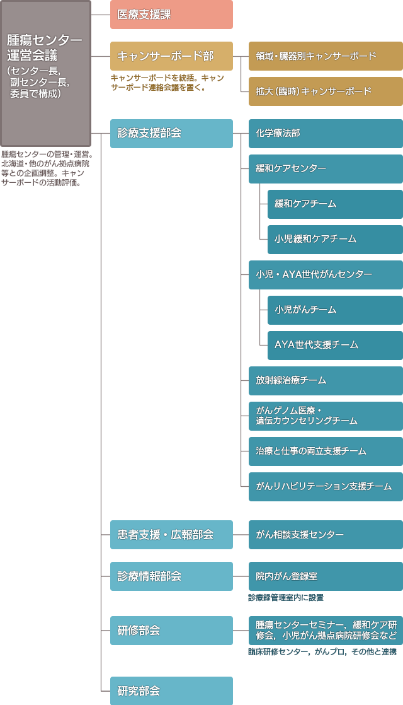

本院では、がんの集学的治療の発展に伴い、平成16年に診療科を横断する外来治療センターが設置され、さらに各診療科にまたがる機能を集約させるために、腫瘍センターとして、平成20年1月に新たに発足しました。
現在、本院はがん診療連携拠点病院等に指定され（下表参照）、がん診療に関わる院内の多種多様な業務の統括的な役割を果たしています。
・腫瘍センターの管理・運営は、がん治療に関わる各診療科長等からなるセンター運営会議が担当します。
・事業計画等は、各部・部会で検討の上、センター運営会議にて審議されます。
・学内のキャンサーボード全体を統括し、必要なボードを設置します。
・キャンサーボード部は、腫瘍センター長と運営会議とは独立して、各キャンサーボードの中央モニタリングを行い、定期的に活動の評価を行います。
・診療支援部会では、化学療法部、緩和ケアセンター、小児・AYA世代がんセンター、放射線治療チーム、がんゲノム医療・遺伝カウンセリングチーム、治療と仕事の両立支援チームを統括し、活動内容を把握し、必要に応じて、各診療科長・中央診療部等との調整を行います。
・患者支援・広報部会では、がん相談支援センターの活動を把握しつつ、市民公開講座などの広報活動を主体的に行います。
・研修部会では、研修会の企画・主催や他施設への講師派遣を行っております。
腫瘍センターの沿革
| 備考 | ||
|---|---|---|
| 平成16（2004）年 | 外来治療センター設置（9月） | 各診療科の診療ブースにて行われていた外来化学療法が外来治療センターに集約 |
| 平成19（2007）年 | 院内がん登録システム構築（7月） | 院内がん登録開始 |
| 平成20（2008）年 | 腫瘍センター設置（1月） | |
| 化学療法部設置 | 外来治療センターから腫瘍センター化学療法部に名称変更 | |
| 化学療法プロトコール委員会設置 | 全診療科のプロトコールを中央管理 | |
| 緩和ケアチーム稼働 | ||
| がん相談支援センター設置 | 定期的に「がんサロン」を開催 | |
| 平成30（2018）年 | 緩和ケアセンター設置 | 緩和ケアチーム、小児緩和ケアチーム、がん看護外来稼働 |
| キャンサーボード部設置 | 領域・臓器別キャンサーボード再構築・中央モニタリング開始 | |
| 平成31/令和元（2019）年 | 診療支援部設置 | 放射線治療チーム、がんゲノム医療・遺伝カウンセリングチーム稼働 |
| 各種部会設置 | 患者支援・広報部会、診療情報部会、研修部会、研究部会設置 | |
| 小児・AYA世代がんセンター設置 | 小児がんチーム、AYA世代支援チーム稼働 | |
| 令和2（2020）年 | 治療と仕事の両立支援チーム稼働 | |
| イントラネットでのキャンサーボードシステム構築 | COVID-19感染症拡大 |
がん診療関係の本院の沿革
| 平成21（2009）年 | 地域がん診療連携拠点病院の指定を受け、現在に至る（厚生労働大臣） |
| 北海道高度がん診療中核病院の認定を受け、現在に至る（北海道知事） | |
| 平成25（2013）年 | 小児がん拠点病院の指定を受け、現在に至る（厚生労働大臣） |
| 平成30（2018）年 | がんゲノム医療中核拠点病院の指定を受け、現在に至る（厚生労働大臣） |
センター長ご挨拶
腫瘍センター長 木下 一郎
2024年度より、前任の篠原信雄教授の後任として、腫瘍センター長に就任いたしました。これまで副センター長として腫瘍内科医の立場から活動してまいりましたが、今後は北海道大学病院腫瘍センターを統括する責任を担うことになり、その重責を実感しております。
北海道大学病院では、2004年9月に外来治療センターを開設し、各診療科で行われていた外来化学療法を集約しました。2007年7月には院内がん登録システムを構築し、2008年1月に腫瘍センターが設立されました。これに伴い、外来治療センターは化学療法部と改称され、キャンサーボードの設立準備や化学療法プロトコール委員会の設置、緩和ケアチームの稼働など、がん診療体制を整備してきました。同時に、がん相談支援センターや院内がん登録室も整備されました。その結果、2009年4月に地域がん診療連携拠点病院の指定を受け、同年8月には北海道高度がん診療中核病院として認定されました。さらに、2013年2月には小児がん拠点病院、2018年4月にはがんゲノム医療中核拠点病院の指定を受けています。また、がん相談支援センターのもと、定期的に「がんサロン」を開催し、緩和ケアセンターを設置して、患者さんおよびご家族の皆様の期待に応えるべく努力しています。2018年にはキャンサーボード部を設置し、2021年にはがんリハビリテーション支援チームを新設しました。
現在、北海道大学病院は、特定機能病院、がん診療連携拠点病院、臨床研究中核病院、小児がん拠点病院、がんゲノム医療中核拠点病院として、より一層のがん診療の充実と、最先端医療の研究開発に取り組んでいます。併せて、がん診療専門医による地域医療支援、病院職員を対象とした研修会の実施、市民公開講座を通じた市民啓発なども行っています。
今後、診療科間・多職種間の連携を強化し、より一層のがん診療の充実に取り組みます。皆様の期待に応え、最善のがん診療を提供するために、職員一同が力を合わせて参りますので、今後ともご支援ご協力の程、よろしくお願い申し上げます。
組織図
北海道大学病院腫瘍センター 組織図

- 【院内連携】
- 放射線部，薬剤部，看護部，病理部，がん遺伝子診断部，臨床遺伝子診療部，口腔ケア連携センター，陽子線治療センター，医療安全管理部，臨床研究開発センターなど
広報誌・パンフレット
「がん情報普及パンフレット」のご案内
がん診療連携拠点病院機能強化事業の一環として、普及啓発・情報提供に関するパンフレットを発行しております。
がん患者さんやその家族のために、がんに係る情報をわかりやすく説明し、安心してがん診療を受けていただくためのパンフレットです。
こちらから、内容の閲覧・印刷が可能となっておりますのでご活用ください。
最終更新 2020年7月20日